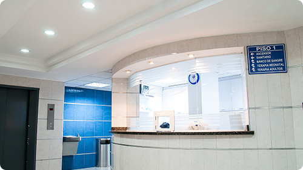

疾患のご説明
当院で治療可能な疾患のご説明いたします

- ・齢黄斑変性/糖尿病黄斑浮腫/網膜静脈閉塞症
- ・網膜剥離/黄斑前膜/黄斑円孔/糖尿病網膜症/硝子体出血
- ・白内障
- ・流涙症（なみだ目）
- ・眼瞼下垂・眼瞼内反症
- ・屈折異常による視力の低下(近視、遠視、乱視、老視)
- ・緑内障
- ・斜視、弱視
- ・コンタクトレンズ、メガネ処方
- ・眼精疲労、ドライアイ
- ・ものもらい
- ・アレルギー性結膜炎 など
治療・診療の流れ

受付
まずは受付にて
・診察券・保険証
をご提示ください。
・お薬手帳・各種医療受給者証・紹介状
をお持ちの方はご一緒にご提示ください。
問診
現在目に関わる困っていることを伺います。 診療を行うために必要な情報についてもお尋ねします。 （アレルギー・現在使っている薬等）
眼科検査
問診の結果に合わせて、視力検査、屈折検査、眼圧検査、角膜形状解析検査、視野検査、眼底カメラ撮影、三次元眼底断層撮影検査、蛍光眼底造影検査など多くの検査のうち、診断と治療に必要と判断した検査を行います。
診察
眼科検査の結果を元に、医師から検査データを患者さんご本人やご家族に提示し、現在の目の状態や病気の診断結果について詳しくご説明します。当院の特徴として電子カルテを用いて、多くの画像検査にて精密診断を行い、一緒にモニターを見ながら説明します。
治療
診察の結果から、最も適当と思われる治療法をご案内し、治療をどう進めていくかについてご相談します。決定した治療方針に基づいて治療を行っていきます。ただし、場合によっては治療方針を変更することもあります。
会計
お会計を済まされてお帰りの際には、次回の再診予約、院外処方箋および受診明細をお渡し致します。